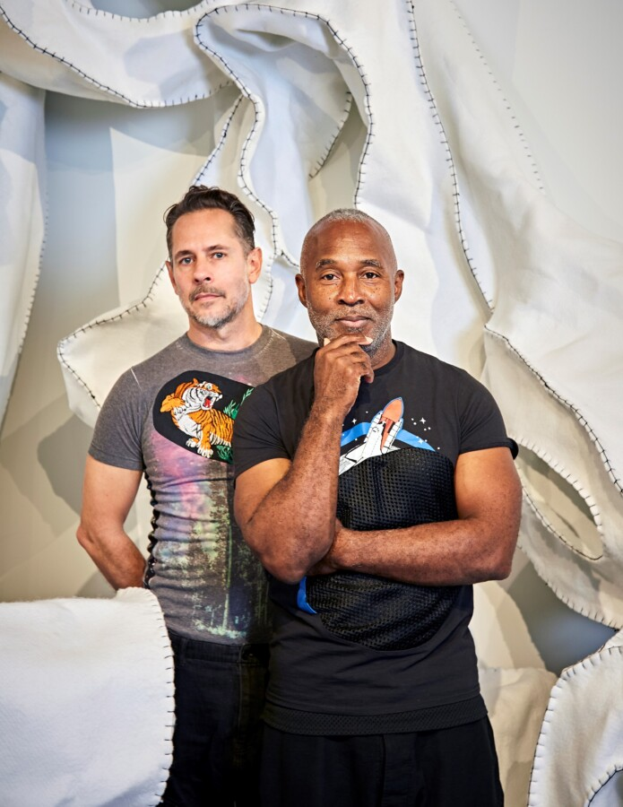

Life is an Art: IAM the party Intuit’s annual gala
Discover the unexpected with the hottest connectors, artists and community builders from Chicago and around the world. Enjoy an open bar with signature cocktails, inspiring stories during a brief award ceremony which includes a cameo from rock-n-roll hall-of-famer singer Nona Hendryx, followed by a thoughtfully curated dinner.
Purposefully aligned with EXPO Chicago, Chicago’s biggest art week of the year (April 9–12), Life is an Art: IAM the party is the most exciting way to celebrate Intuit’s 35th anniversary and the 1st birthday of the expanded Museum. Step out looking like a work of art, and join us in celebrating our shared belief that art is not a luxury—it is a human right.
Proceeds from this event go towards Intuit’s efforts to advocate for self-taught art and its power as a unique mirror to the world, a refuge for the spirit, and a force for connection and understanding.
Be the art — get inspired by the fashion mood board.
At Life is an Art, we’re honored to celebrate the following
Jerry Stefl
Visionary Award recipient
Nick Cave and Bob Faust